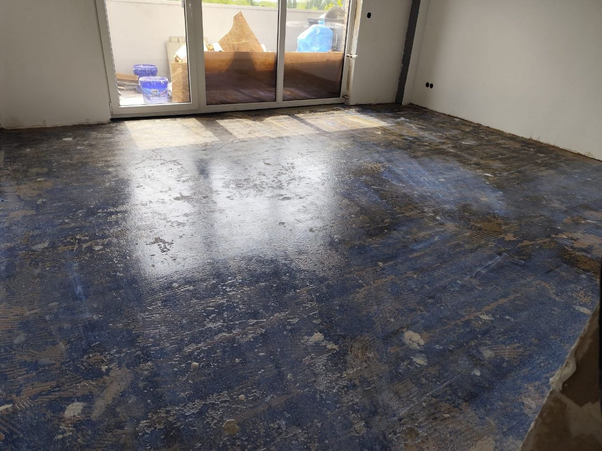
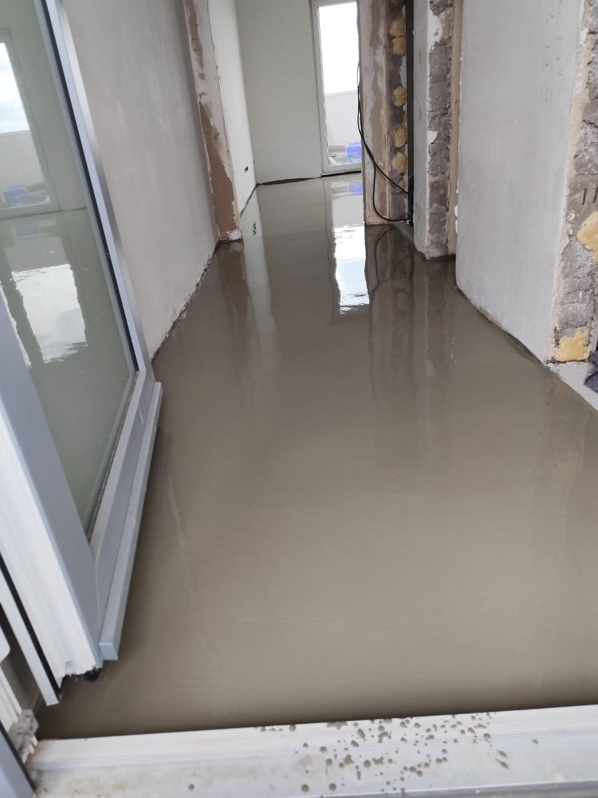
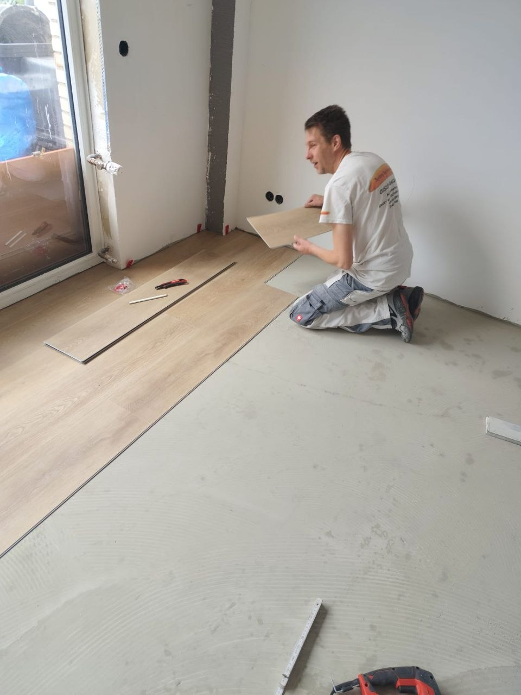
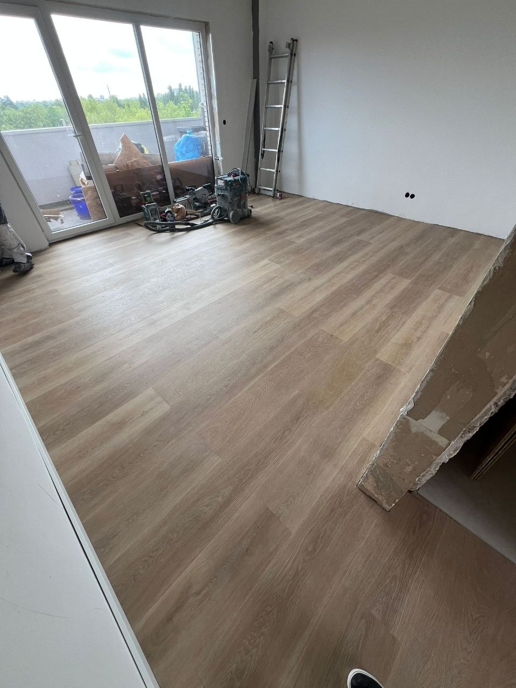

← Zur StartseiteVom Rohbau
Projektgeschichte · Düsseldorf-Stockum
Vom Rohbau
zur klaren Linie.
BadInnenausbauBodenTreppe

Die Aufgabe
Viele Gewerke.
Ein Ergebnis.
Stockum zeigt, was koordinierter Innenausbau bedeutet: vom vorbereiteten Bad über Wand- und Bodenaufbau bis zur maßgeblichen Treppe. Die Galerie dokumentiert nicht nur das fertige Bild, sondern die Arbeit dazwischen.
Baustellenfotos stehen hier bewusst im Kontext. Sie machen Untergrund, Reihenfolge und Präzision sichtbar.

Die Treppe
Aus Konstruktion
wird Charakter.
Weiße Flächen, eine schwarze Stahlwirkung und warme Holzstufen geben dem zuvor rohen Treppenraum einen klaren Mittelpunkt.Bauphasen
Untergrund.
Aufbau. Abschluss.




31 echte Aufnahmen
Die ganze
Stockum-Galerie.
31 Projektbilder sichtbar.
Nächstes Projekt